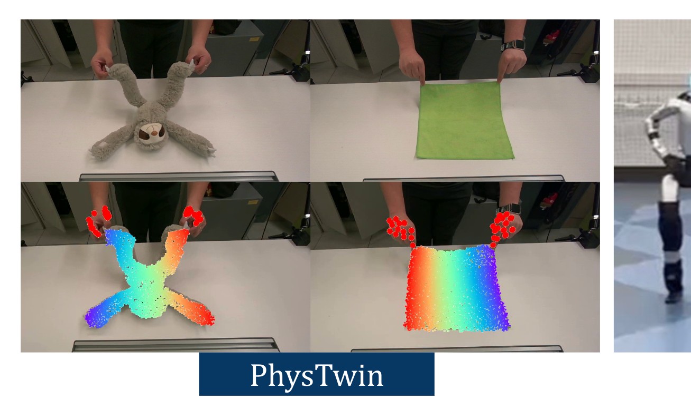
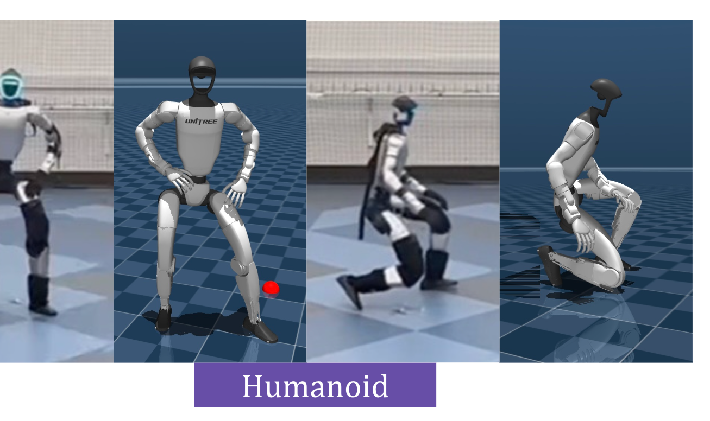

Deformables
The same episode contract extends beyond rigid manipulation to PhysTwin-style deformable interactions, where tracked geometry and physical parameters must explain observed object deformation.

Real-to-sim conversion for robotic interaction remains labor-intensive because a usable simulation needs more than visual reconstruction. It must recover scene geometry and object state, infer physical parameters, and assemble actors, cameras, poses, and trajectories into a runnable physical environment.
We introduce Agentic Real2Sim, a framework for generalized physical world modeling with vision-language agents. Given stereo RGB-D videos, camera intrinsics and extrinsics, and robot trajectories, Agentic Real2Sim converts raw recordings into simulatable episodic twins that preserve observations, geometry, robot interaction, and object state.
The framework combines a visual processing agent for segmentation, geometry recovery, and pose tracking; a physical-prior agent for inferring material and physical parameters; a scene preparation agent for aligning cameras, ground planes, object placement, and trajectories; and simulator-in-the-loop grasp optimization. We evaluate it across rigid-object manipulation, deformable-object interaction, and humanoid motion scenes, spanning domains that are usually handled by separate Real2Sim pipelines.
The same episode contract extends beyond rigid manipulation to PhysTwin-style deformable interactions, where tracked geometry and physical parameters must explain observed object deformation.

Humanoid motion clips are retargeted into closed-loop simulator twins, with controller parameters tuned so the simulated motion follows the observed reference.

There's a lot of excellent work that was introduced around the same time as ours.
Progressive Encoding for Neural Optimization introduces an idea similar to our windowed position encoding for coarse-to-fine optimization.
D-NeRF and NR-NeRF both use deformation fields to model non-rigid scenes.
Some works model videos with a NeRF by directly modulating the density, such as Video-NeRF, NSFF, and DyNeRF
There are probably many more by the time you are reading this. Check out Frank Dellart's survey on recent NeRF papers, and Yen-Chen Lin's curated list of NeRF papers.
@article{park2021nerfies,
author = {Park, Keunhong and Sinha, Utkarsh and Barron, Jonathan T. and Bouaziz, Sofien and Goldman, Dan B and Seitz, Steven M. and Martin-Brualla, Ricardo},
title = {Nerfies: Deformable Neural Radiance Fields},
journal = {ICCV},
year = {2021},
}